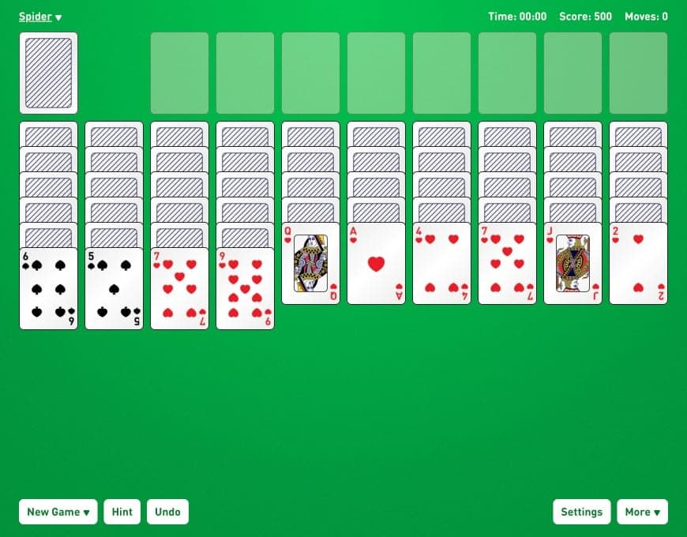
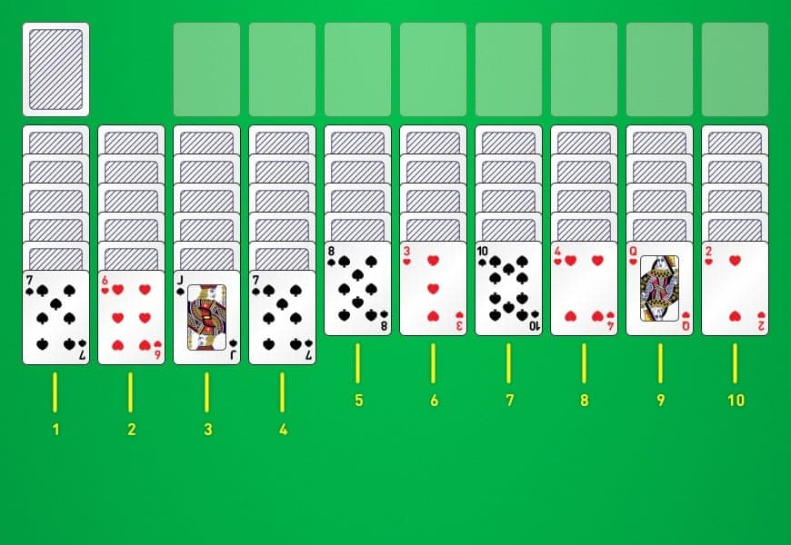

Пасьянс Паук: Бесплатный пасьянс Паук 2 масти [Играть онлайн]
Играйте в пасьянс «Паук» онлайн: бесплатный пасьянс «Паук 2» с мастями. Получите мгновенный игровой процесс с отличными функциями, такими как полноэкранный игровой процесс и выгодные сделки.
Это самая популярная бесплатная игра «Пасьянс Паук». Игра с двумя мастями предлагает среднюю игру из трех самых популярных версий. Игра впервые вошла в поп-культуру, когда Microsoft представила ее в Windows 95, и с тех пор ее любят.
Мы сохранили игровой процесс оригинальной игры, модернизировали дизайн и добавили множество функций для улучшения игры. Если вы чувствуете себя готовым к вызову, вы можете случайно перетасовать или выполнить ежедневное задание, а если вы настроены на более беззаботную игру, вы можете начать выигрышную сделку.
В нашей игре также есть неограниченное количество подсказок и отмен, чтобы помочь вам, когда вы чувствуете, что застряли. В меню настроек вы можете переключать звук, автозапуск, изменять дизайн и многое другое, чтобы настроить игру под свой стиль игры.
Правила пасьянса Паук
В отличие от других видов терпения, в эту игру играют двумя колодами карт. Если вы играете с физическими картами, вы должны сначала просмотреть колоды и убедиться, что все обучающие карты и джокеры находятся вне колоды. Как только вы это сделаете, хорошенько перетасуйте эти карты. Теперь вы должны быть готовы к настройке игры!
Как настроить Spider
Шаг 1: Разложите десять карт лицевой стороной вниз рядом друг с другом, начиная слева направо. Теперь у вас есть десять строк на доске, также известных как таблицы. Затем положите еще десять карт лицевой стороной вниз поверх десяти карт, которые вы только что положили. Продолжайте делать это, пока у вас не будет четыре карты в каждой таблице. Затем вы должны положить карту лицевой стороной вниз на каждую из первых четырех таблиц, а на следующие шесть таблиц положить карту лицевой стороной вверх. Все, что осталось сделать, это положить карту лицевой стороной вверх на первые четыре карты.
Шаг 2: После того, как вы выложите все карты, у вас должна остаться стопка карт. Эта стопка называется запасом и будет использоваться на протяжении всей игры. Поместите карту над первой таблицей. Также следует оставить место для восьми дополнительных свай, которые мы называем фундаментом.
Как играть в пасьянс «Паук»
Шаг 1: Чтобы выиграть, вам нужно, чтобы все ваши карты оказались на фундаменте. Как только все ваши карты окажутся на фундаменте, вы выиграли игру! Правила довольно просты. Вы можете переместить любую карту лицом вверх к любой другой карте на столе, если перемещаемая карта на одну меньше карты, на которую она перемещается. Вы также можете перемещать последовательность карт, если они расположены в порядке убывания, а нижняя карта на одну меньше карты, на которую она перемещается. Если карта лицом вниз становится верхней картой, когда сделан ход, вы должны перевернуть ее лицом вверх после того, как ход сделан. При игре общая стратегия состоит в том, чтобы построить как можно больше последовательностей на столе.
Шаг 2: После того, как вы выложите все карты, у вас должна остаться стопка карт. Эта стопка называется запасом и будет использоваться на протяжении всей игры. Поместите карту над первой таблицей. Также следует оставить место для восьми дополнительных свай, которые мы называем фундаментом.
Теперь вы должны знать правила. Эта игра может быть немного сложной, поэтому мы желаем вам удачи!
Часто задаваемые вопросы (FAQ)
Свяжитесь с нами по адресу contact@online-solitaire.com , если у вас остались вопросы без ответа после прочтения часто задаваемых вопросов.
Что такое пасьянс «Паук»?
Это игра «Терпение», очень похожая на «Клондайк» или «Свободная ячейка». Впервые он был популяризирован Microsoft и был выпущен с их операционной системой Windows 95, где его сегодня знает большинство людей. Это считается одним из самых сложных типов игр на терпение, и для победы в игре требуется много стратегии и удачи.
Как раскладывать пасьянс «Паук»?
В игре используются две полные колоды. Таким образом, всего 104 карты. Когда начинается новая игра, 54 карты делятся на десять таблиц. В каждой из первых четырех таблиц по пять карт, а в каждой из следующих таблиц — по пять карт. Верхняя карта каждой таблицы переворачивается лицом вверх, а остальные остаются лицом вниз. Остальные 50 карт размещаются в верхнем левом углу экрана.
Как играть в пасьянс «Паук»?
Карты всегда можно переместить на карту более высокого ранга. Например, если у вас семь треф, вы можете поставить на восьмерку треф, восьмерку червей, бубновую или пиковую. В результате несколько мастей карт могут быть сложены друг на друга. Цель игры состоит в том, чтобы собрать карты одной масти от туза до короля. Когда у вас есть полная последовательность карт, их можно переместить в основу. Это произойдет только в том случае, если последовательность карт одной масти.
Если все карты в ряду одной масти, вы можете перемещать их все одновременно. Например, если у вас есть восьмерка пик через шестерку пик, вы можете щелкнуть и перетащить их все на девятку любой масти. Вы не можете перемещать их вместе, если у вас есть восьмерка треф, семерка бубен и шестерка чего-то еще. После этого вам придется перемещать их по одному.
Вы можете переместить любую карту или частичный проход на пустое место в таблице, если оно у вас есть.
Когда у вас больше нет ходов на столе, вы можете нажать на акцию в верхнем левом углу. Это переместит десять карт из запаса вниз на таблицы, поместив по одной карте на каждую таблицу. Мы не рекомендуем делать это, пока вы не будете полностью уверены, что не осталось ходов.